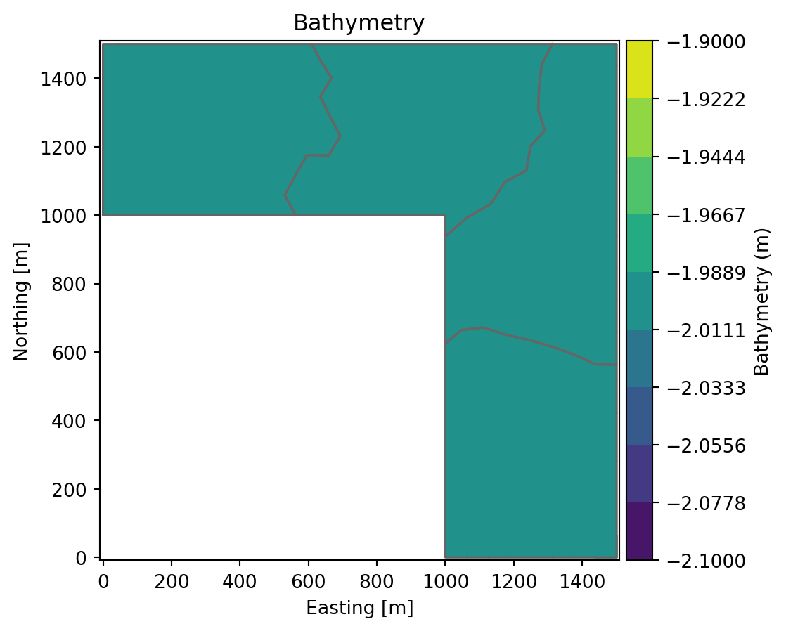
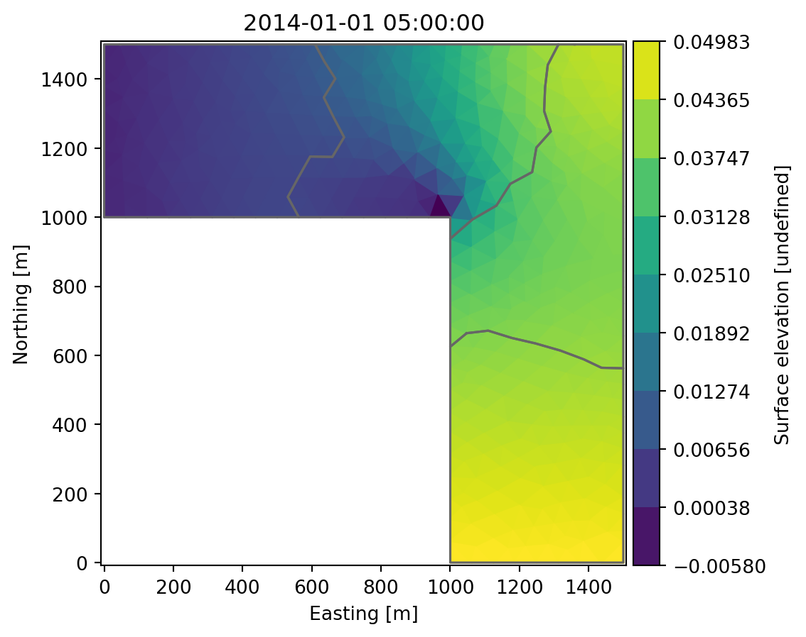

import mikeio
import numpy as np
from mikeio.spatial import GeometryFM2DMerging subdomain dfsu files
During simulation MIKE will commonly split simulation files into subdomains and output results with a p_# suffix. This script will merge dfsu files of this type into a single file.
Note: Below implementation considers a 2D dfsu file. For 3D dfsu file, the script needs to be modified accordingly.
Import libraries
# (optional) check first file, items etc.
mikeio.open("../../data/SimA_HD_p0.dfsu")<mikeio.Dfsu2DH>
number of elements: 194
number of nodes: 120
projection: PROJCS["UTM-32",GEOGCS["Unused",DATUM["UTM Projections",SPHEROID["WGS 1984",6378137,298.257223563]],PRIMEM["Greenwich",0],UNIT["Degree",0.0174532925199433]],PROJECTION["Transverse_Mercator"],PARAMETER["False_Easting",500000],PARAMETER["False_Northing",0],PARAMETER["Central_Meridian",9],PARAMETER["Scale_Factor",0.9996],PARAMETER["Latitude_Of_Origin",0],UNIT["Meter",1]]
items:
0: Surface elevation <Surface Elevation> (meter)
1: Current speed <Current Speed> (meter per sec)
2: Current direction <Current Direction> (radian)
time: 2014-01-01 00:00:00 - 2014-01-01 10:00:00 (3 records)Choose items to process
# choose items to process (when in doubt look at one of the files you want to process with mikeio.open)
items = ["Surface elevation", "Current speed", "Current direction"]Read files
Option A: automatically find all with _p# suffix
import glob
import os
basename = "../../data/SimA_HD" # basename of the dfsu files
def find_dfsu_files(basename):
pattern = f"{basename}_p*.dfsu"
files = sorted(glob.glob(pattern))
if not files:
raise ValueError(f"No files found matching the pattern: {pattern}")
return files
dfs_files = find_dfsu_files(basename)
print(f"Found {len(dfs_files)} files:")
for file in dfs_files:
print(f" - {os.path.basename(file)}")
dfs_list = [mikeio.read(file, items=items) for file in dfs_files]Found 4 files:
- SimA_HD_p0.dfsu
- SimA_HD_p1.dfsu
- SimA_HD_p2.dfsu
- SimA_HD_p3.dfsuOption B: manually select files
# List of input dfsu files
dfs_files = [
"../../data/SimA_HD_p0.dfsu",
"../../data/SimA_HD_p1.dfsu",
"../../data/SimA_HD_p2.dfsu",
"../../data/SimA_HD_p3.dfsu",
]
# read all dfsu files
dfs_list = [mikeio.read(file, items=items) for file in dfs_files]Extract data of all subdomains
# Create a dictionary to store data for each item
data_dict = {item: [] for item in items}
# Get time steps (assuming all files have the same time steps)
time_steps = dfs_list[0][items[0]].time
# loop over items and time steps and concatenate data from all subdomains
for item in items:
for i in range(len(time_steps)):
# Extract and combine data for the current time step from all subdomains
combined_data = np.concatenate([dfs[item].values[i, :] for dfs in dfs_list])
data_dict[item].append(combined_data)
# Convert the list to a numpy array
data_dict[item] = np.array(data_dict[item])
# Prepare Merged Data
merged_data = np.array([data_dict[item] for item in items])Merge geometry of all subdomains
geometries = [dfs.geometry for dfs in dfs_list]
combined_node_coordinates = []
combined_element_table = []
node_offset = 0
# loop through geometries to combine nodes and elements of all subdomains
for geom in geometries:
current_node_coordinates = geom.node_coordinates
current_element_table = geom.element_table
combined_node_coordinates.extend(current_node_coordinates)
adjusted_element_table = [element + node_offset for element in current_element_table]
combined_element_table.extend(adjusted_element_table)
node_offset += len(current_node_coordinates)
combined_node_coordinates = np.array(combined_node_coordinates)
combined_element_table = np.array(combined_element_table, dtype=object)
projection = geometries[0]._projstr
# create combined geometry
combined_geometry = GeometryFM2D(
node_coordinates=combined_node_coordinates,
element_table=combined_element_table,
projection=projection
)combined_geometry.plot()
Merge everything into dataset
ds_out = mikeio.Dataset.from_numpy(
data=merged_data, # n_items, timesteps, n_elements
items=items,
time=time_steps,
geometry=combined_geometry,
)ds_out[items[0]].sel(time=1).plot() # plot the first time step of the first item
Write output to single file
output_file = "area_merged.dfsu"
ds_out.to_dfs(output_file)